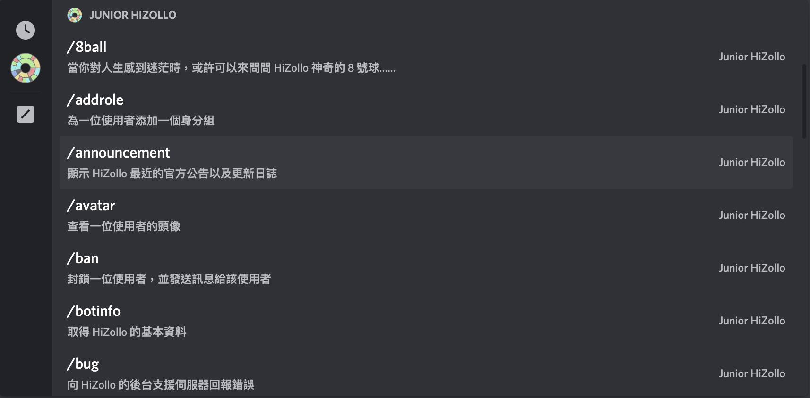
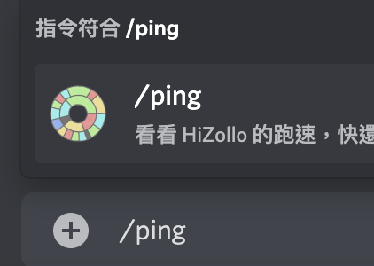
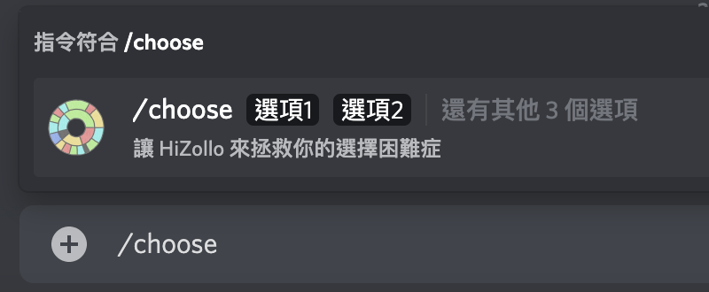
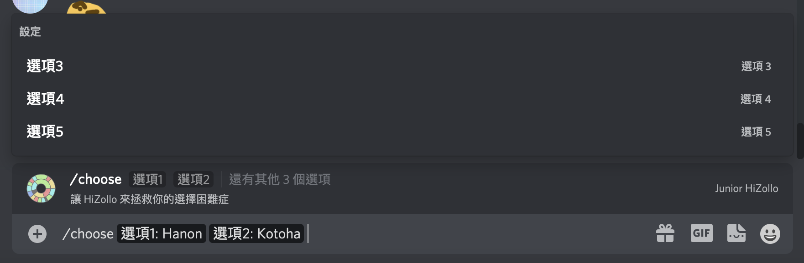
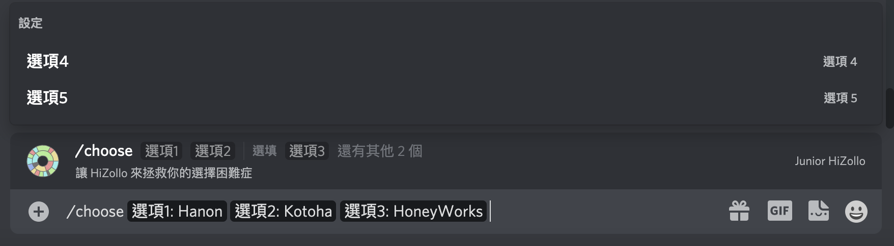

/指令 並發送來執行指令。你只需輸入 / 並移動至 HiZollo 的區域即可看到全部的指令：

如果你沒有看到指令，就代表你應該是 HiZollo 的早期用戶，或是使用了早期的連結進行邀請，那時的連結還不包含讓 HiZollo 可以註冊斜線指令的權限在。遇到這種狀況，你可以透過重新邀請 HiZollo來解決這個問題。如果你都沒有狀況，或是把問題解決了，就可以進入下一步。/篩選文字 來過濾出你想要執行的指令，像本例中我們輸入 /ping：

接著將此訊息送出後，指令便會傳送給 HiZollo 去執行：
恭喜，你成功執行了一個斜線指令！
/help）的存在。你只需要向上例一樣在文字輸入區域打入 /help，就可以叫出指令清單了！/choose 指令：

選項一跟選項二在最前面特別顯示出來，代表他們是必填。在斜線指令中，如果必填的參數沒有被填上，Discord 會不讓你送出這個指令。讓我們將他們填好：

接下來會出現剩餘的選項，通通都是選填，有需要再填即可。本例中我們填入選項三：

接下來只要送出，即可執行此指令！
這麼一來，你也學會執行帶有參數的斜線指令了。
| 分類 | 內容 |
|---|---|
| 基本 | 邀請 HiZollo ・ 指令清單及一般指令・ 指令用法的查詢 |
| 進階 | 指令群・ 指令別名・ 群組指令捷徑 |
| 特殊 |
隱藏指令・
z!calc 的進階用法・
支援伺服器
|
| 斜線指令 | 開始使用・ 指令用法的查詢・ 斜線Ｚ指令 |
| HiZollo 聯絡網 | HiZollo Guild Drop |